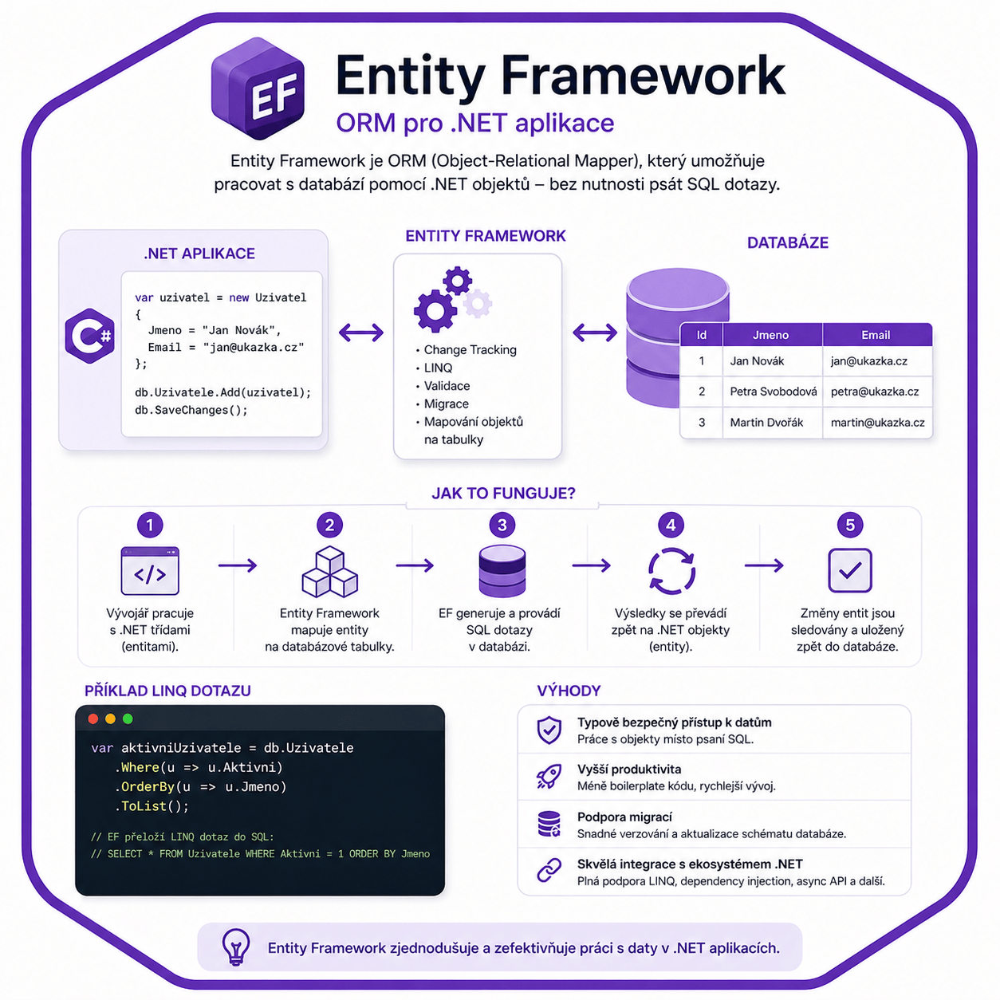

Entity Framework – Průvodce a použití
Praktické rady pro práci s Entity Framework jako ORM pro přístup k databázi v .NET.

Entity Framework
Kdy použít
Poznámka
Pro rychlý vývoj aplikací s menšími nároky na výkon a větší komplexitou modelů.
- Výkon: Nižší výkon kvůli režii ORM (Object Relation Mapping)
- Snadnost vývoje: Rychlý vývoj s minimálním SQL
- Komplexní modely: Automatická správa modelů a migrací
- Flexibilita dotazů: Omezenější – závisí na EF generátoru
Instalace
"C:\Program Files\dotnet\dotnet.exe" tool install --ignore-failed-sources --global dotnet-ef
Poznámka
Balíček bude uložen ve složce: C:\Users\<TvéUživatelskéJméno>\.dotnet\tools
Pro zálohu offline, zkopírujte obsah této složky na jiný počítač, kde nástroj dotnet-ef nebude dostupný online.
Varování
Pokud složku umístíte na jinou cestu, ujistěte se, že ji přidáte do proměnných do PATH, aby byl nástroj dostupný z příkazového řádku.
1. Spusťte build pro zobrazení chyb
dotnet build
2. Vytvořte první migraci
Důležité
Ujistěte se, že se nacházíte ve složce, kde se nachází váš .csproj soubor
dotnet ef migrations add InitialCreate
3. Aktualizujte databázi pomocí migrace
dotnet ef database update
Použití
Instalace NuGet balíčku:
dotnet add package Microsoft.EntityFrameworkCore dotnet add package Microsoft.EntityFrameworkCore.SqlServerKonfigurace a použití:
using System; using System.Linq; using System.Threading.Tasks; using Microsoft.EntityFrameworkCore; // Model entity public class User { public int Id { get; set; } public string Name { get; set; } public int Age { get; set; } } // DbContext pro správu databáze public class AppDbContext : DbContext { public DbSet<User> Users { get; set; } protected override void OnConfiguring(DbContextOptionsBuilder optionsBuilder) { optionsBuilder.UseSqlServer("Server=myServer;Database=myDatabase;User Id=myUser;Password=myPassword;"); } } // Služba pro práci s uživateli public class UserService { private readonly AppDbContext _dbContext; public UserService(AppDbContext dbContext) { _dbContext = dbContext; } public async Task ShowUsersAsync() { var users = await _dbContext.Users .Where(u => u.Age > 18) .ToListAsync(); foreach (var user in users) { Console.WriteLine($"ID: {user.Id}, Name: {user.Name}, Age: {user.Age}"); } } } // Hlavní program class Program { static async Task Main() { using var dbContext = new AppDbContext(); var userService = new UserService(dbContext); await userService.ShowUsersAsync(); } }
Příkazy
| Příkaz | Popis |
|---|---|
dotnet ef migrations add <Název> |
Vytvoří nový soubor pro migraci s názvem <Název>, který zachytí změny ve tvých modelech (entitách). |
dotnet ef migrations remove |
Smaže poslední migraci, kterou jsi přidal, ale nezmění databázi (pouze vrátí kód zpět). |
dotnet ef migrations list |
Zobrazí seznam všech migrací, které jsi vytvořil (ukazuje, jaké změny se postupně prováděly). |
dotnet ef database update |
Aplikuje všechny migrace (změny) na databázi, aby se databáze aktualizovala podle aktuálních modelů. |
dotnet ef database update <Název> |
Aplikuje migraci s názvem <Název> (pokud nechceš aplikovat všechny migrace). |
dotnet ef database drop |
Smaže celou databázi – dávej pozor, tímto příkazem přijdeš o všechna data. |
dotnet ef dbcontext list |
Ukáže všechny třídy DbContext ve tvém projektu (DbContext je hlavní třída pro práci s databází). |
dotnet ef dbcontext info |
Zobrazí informace o tvojí DbContext třídě (užitečné pro zjištění detailů o konfiguraci). |
dotnet ef dbcontext scaffold |
Vytvoří třídy (modely) podle existující databáze – tímto způsobem můžeš začít, pokud už máš databázi. |
dotnet ef migrations script |
Vygeneruje SQL skript, který obsahuje všechny změny v migracích – vhodné pro manuální nasazení. |